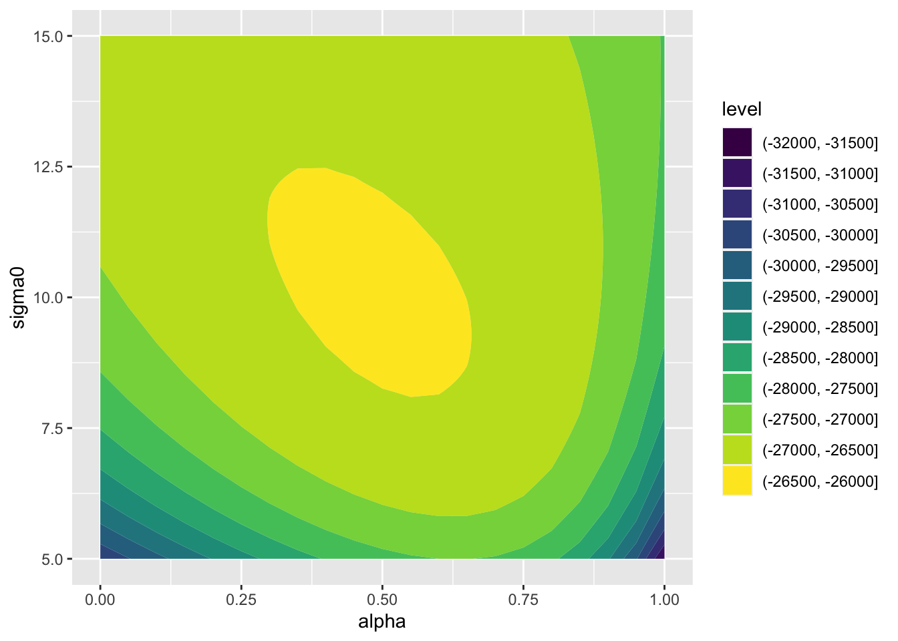
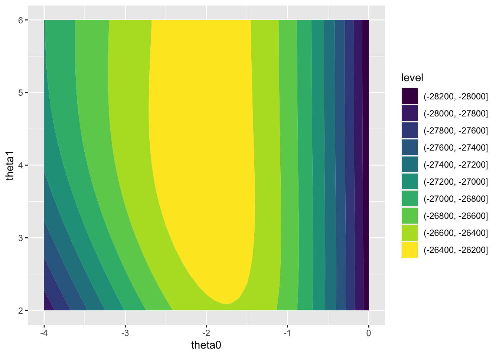
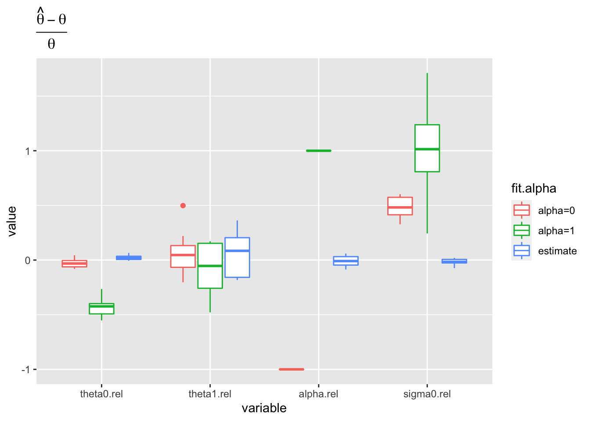
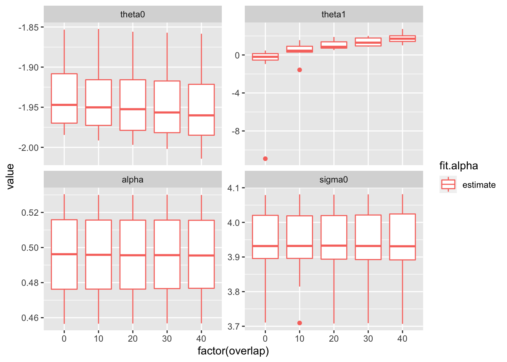
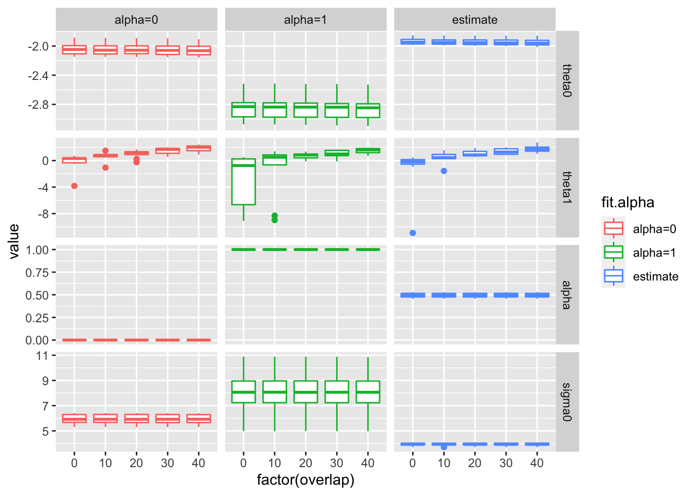
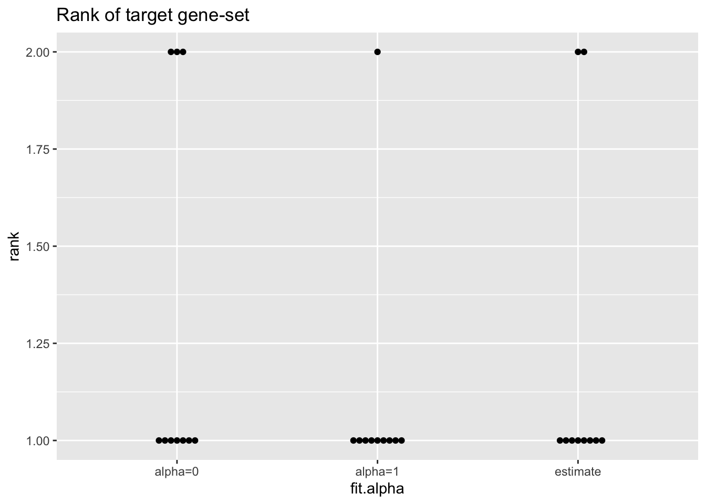
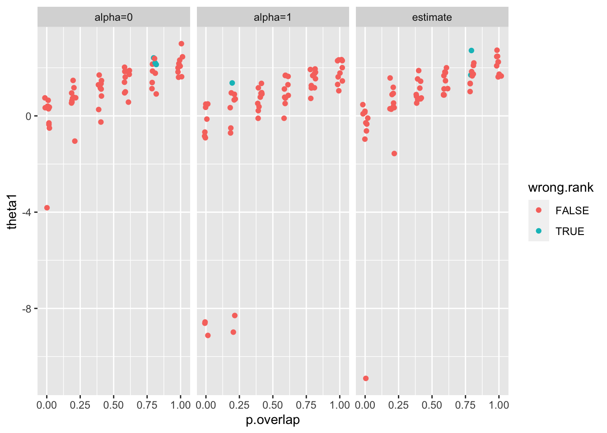
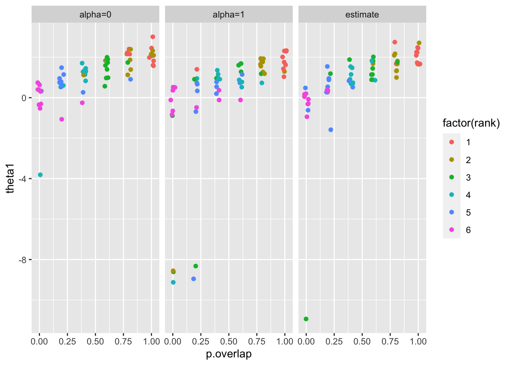

Last updated: 2022-03-29
Checks: 7 0
Knit directory: logistic-susie-gsea/
This reproducible R Markdown analysis was created with workflowr (version 1.7.0). The Checks tab describes the reproducibility checks that were applied when the results were created. The Past versions tab lists the development history.
Great! Since the R Markdown file has been committed to the Git repository, you know the exact version of the code that produced these results.
Great job! The global environment was empty. Objects defined in the global environment can affect the analysis in your R Markdown file in unknown ways. For reproduciblity it’s best to always run the code in an empty environment.
The command set.seed(20220105) was run prior to running the code in the R Markdown file. Setting a seed ensures that any results that rely on randomness, e.g. subsampling or permutations, are reproducible.
Great job! Recording the operating system, R version, and package versions is critical for reproducibility.
Nice! There were no cached chunks for this analysis, so you can be confident that you successfully produced the results during this run.
Great job! Using relative paths to the files within your workflowr project makes it easier to run your code on other machines.
Great! You are using Git for version control. Tracking code development and connecting the code version to the results is critical for reproducibility.
The results in this page were generated with repository version 122deec. See the Past versions tab to see a history of the changes made to the R Markdown and HTML files.
Note that you need to be careful to ensure that all relevant files for the analysis have been committed to Git prior to generating the results (you can use wflow_publish or wflow_git_commit). workflowr only checks the R Markdown file, but you know if there are other scripts or data files that it depends on. Below is the status of the Git repository when the results were generated:
Ignored files:
Ignored: .DS_Store
Ignored: .RData
Ignored: .Rhistory
Ignored: .Rproj.user/
Ignored: library/
Ignored: renv/library/
Ignored: renv/staging/
Ignored: staging/
Untracked files:
Untracked: _targets.R
Untracked: _targets.html
Untracked: _targets.md
Untracked: _targets/
Untracked: _targets_r/
Untracked: analysis/fetal_reference_cellid_gsea.Rmd
Untracked: analysis/fixed_intercept.Rmd
Untracked: analysis/iDEA_examples.Rmd
Untracked: analysis/latent_gene_list.Rmd
Untracked: analysis/latent_logistic_susie.Rmd
Untracked: analysis/libra_setup.Rmd
Untracked: analysis/linear_method_failure_modes.Rmd
Untracked: analysis/linear_regression_failure_regime.Rmd
Untracked: analysis/logistic_susie_veb_boost_vs_vb.Rmd
Untracked: analysis/references.bib
Untracked: analysis/simulations.Rmd
Untracked: analysis/test.Rmd
Untracked: analysis/wenhe_baboon_example.Rmd
Untracked: build_site.R
Untracked: cache/
Untracked: code/latent_logistic_susie.R
Untracked: code/marginal_sumstat_gsea_collapsed.R
Untracked: data/adipose_2yr_topsnp.txt
Untracked: data/fetal_reference_cellid_gene_sets.RData
Untracked: data/pbmc-purified/
Untracked: docs.zip
Untracked: index.md
Untracked: latent_logistic_susie_cache/
Untracked: simulation_targets/
Untracked: single_cell_pbmc_cache/
Untracked: summary_stat_gsea_exploration_cache/
Unstaged changes:
Modified: _simulation_targets.R
Modified: _targets.Rmd
Modified: analysis/gseabenchmark_tcga.Rmd
Modified: code/fit_baselines.R
Modified: code/fit_logistic_susie.R
Modified: code/fit_mr_ash.R
Modified: code/fit_susie.R
Modified: code/load_gene_sets.R
Modified: code/marginal_sumstat_gsea.R
Modified: code/simulate_gene_lists.R
Modified: code/utils.R
Modified: target_components/factories.R
Modified: target_components/methods.R
Note that any generated files, e.g. HTML, png, CSS, etc., are not included in this status report because it is ok for generated content to have uncommitted changes.
These are the previous versions of the repository in which changes were made to the R Markdown (analysis/summary_stat_gsea_exploration.Rmd) and HTML (docs/summary_stat_gsea_exploration.html) files. If you’ve configured a remote Git repository (see ?wflow_git_remote), click on the hyperlinks in the table below to view the files as they were in that past version.
| File | Version | Author | Date | Message |
|---|---|---|---|---|
| Rmd | 122deec | karltayeb | 2022-03-29 | wflow_publish(pages) |
| html | e0e196c | karltayeb | 2022-03-28 | Build site. |
| Rmd | 494dd37 | karltayeb | 2022-03-28 | wflow_publish(“analysis/summary_stat_gsea_exploration.Rmd”) |
Peter has been thinking about the marginal/single-gene set enrichment problem. (https://www.overleaf.com/project/623485e71fafe7302e4b34f1)
We’ve talked about modelling gene level summary statistics with a two-component mixture model (null and non-null component) and then have the prior probability of being in the non-null component dependent on gene-set membership. Here’s the model:
\[ \begin{align} \hat \beta_i \sim N(\beta_i, s_i^2) \\ \beta_i \sim (1 - \pi_i)\delta_0 + \pi_iN(0,\sigma^2_i) \\ \ln \frac{\pi_i}{1-\pi_i} = \theta_0 + \theta_1x_i \end{align} \]
The detail that Peter’s expressed intest in is how we model \(\sigma_i^2\). Most treatments of GSEA use just z-scores or p-values. If we were to just model z-scores here with a model like
\[ \hat z_i = \frac{\hat\beta}{s_i} \sim N(z_i, 1) \\ z_i \sim (1-\pi_i) \delta_0 + \pi_i N(0, \sigma^2_0) \]
Translating this to the summary stat model we can see it’s equivalent to choosing \(\sigma_i = \sigma_0 s_i\). That is, genes with larger standard error are expected to have larger effect sizes on average. This assumption may not hold in single cell DE expression analysis and other single cell analysis which might be upstream of GSEA.
We can learn the relationship between standard errors and effect sizes. The ASH paper proposed \(\sigma_i = s_i^{\alpha} \sigma_0\), for \(\alpha \in [0 ,1]\). \(\alpha=1\) recovers the z-score model, while \(\alpha=0\) recovers basic ash prior.
The basic question are: - can we learn \(\alpha\)?
how does it impact our GSEA results?
I’m curious how it relates to other GSEA approaches. In particular methods like GORILLA (Eden et al. 2007) (eden2009?) consider the minimum hypergeometic tail probability across all possible cutoffs.
The two component model, with z-scores, won’t give a different gene ranking (3.2.1 of (stepehsn2017?)), but might be thought of loosely as a “soft” thresholding approach.
The beta + standard errors model may reorder genes, and also provides this “soft” thresholding behavior.
library(tidyverse)── Attaching packages ─────────────────────────────────────── tidyverse 1.3.1 ──✓ ggplot2 3.3.5 ✓ purrr 0.3.4
✓ tibble 3.1.6 ✓ dplyr 1.0.8
✓ tidyr 1.2.0 ✓ stringr 1.4.0
✓ readr 2.1.2 ✓ forcats 0.5.1── Conflicts ────────────────────────────────────────── tidyverse_conflicts() ──
x dplyr::filter() masks stats::filter()
x dplyr::lag() masks stats::lag()library(latex2exp)
source('code/marginal_sumstat_gsea.R')I’ve implimented a simple EM optimization procedure in code/marginal_sumstat_gsea.R. Where we iteratively compute responsibilities, update the regression parameters, and update the variance parameters.
The regression parameters \(\theta = (\theta_0, \theta_1)\) are optimized jointly. The variance parameters \((\alpha, \sigma_0)\) we optimized cooardinate-wise.
To not get bogged down in deriving updates, everything is optimized with calls to optim or optimize. But we should not that the gradient and hessian of the \(Q\) function (the EM bound) look just like normal logistic regression. And it shouldn’t be too hard to compute gradients for the variance parameters. So we can probably make things much faster with a bit more thought and effort!
Also, it seems standard to approximation the sampling distribution of the regression coefficients as \(\hat\theta \sim \mathcal N(\theta, -\nabla^2l(\hat \theta))\) where \(l\) is for likelihood. It’s not obvious to me that this works now that the logistic regression is a layer down in the model, and I’m sure this is motivated by asymptotic results that aren’t too valid especially for small gene sets (something like hessian @ MLE looks like Fisher information + estimate is unbiased and efficient)
#' simulate summary statistics from two component enrichment model
#' params is a list with elements theta, sigma0, alpha
#' r.se is a function for sampleing standard errors runif(1e-3, 5) by default
simulate.gene.list = function(params, x = NULL, gene.set.prop=0.01, n.genes=10000, r.se=NULL) {
theta0 = params$theta[1]
theta1 = params$theta[2]
sigma0 = params$sigma0
alpha = params$alpha
# simulate x if not provided
if(is.null(x)){
x <- rbinom(n.genes, 1, gene.set.prop) # gene set
} else{
n.genes <- length(x)
}
if(is.null(r.se)){
se <- runif(n.genes, 1e-3, 5) # simulate standard errors, reasonable?
} else {
se <- r.se(n.genes)
}
sigma <- se ^ alpha * sigma0
gamma <- rbinom(n.genes, 1, sigmoid(theta0 + theta1 * x)) # null/non-null
beta <- rnorm(n.genes, mean = 0, sd = se)
beta <- beta + (rnorm(n.genes, mean=0, sd=sigma) * gamma)
return(list(x=x, beta=beta, se=se, gamma=gamma, params=params))
}Here’s a quick example to check that optimization is working. And it seems to! We can optimize all of the parameters and the estimates looks close to the true values.
source('code/marginal_sumstat_gsea.R')
params = list(
theta = c(-2, 4),
alpha = 0.5,
sigma0 = 10
)
sim <- simulate.gene.list(params, gene.set.prop = 0.1, n.genes = 10000)
gsea <- summary.stat.gsea(sim$x, sim$beta, sim$se)
# fit just theta
params.init = list(
theta = c(-4, 10),
alpha = 0.5,
sigma0 = 10
)
params.fit = gsea$expectation.maximiztion(
params.init, n.iter=20, update.alpha = F, update.sigma0 = F)
params.fit$responsibilities <- NULL
params.fit$theta[1] -1.980673 3.874266# fit alpha too
params.init = list(
theta = c(-4, 10),
alpha = 1.0,
sigma0 = 10
)
params.fit = gsea$expectation.maximiztion(
params.init, n.iter=20, update.alpha = T, update.sigma0 = F)
params.fit$theta[1] -1.979642 3.873384params.fit$alpha[1] 0.4994328# fit sigma too
params.init = list(
theta = c(-4, 10),
alpha = 0.5,
sigma0 = 1
)
params.fit = gsea$expectation.maximiztion(
params.init, n.iter=20, update.alpha = F, update.sigma0 = T)
params.fit$theta[1] -1.987665 3.866905params.fit$sigma0[1] 10.16249# fit all
params.init = list(
theta = c(-4, 10),
alpha = 1.0,
sigma0 = 1
)
params.fit = gsea$expectation.maximiztion(
params.init, n.iter=50, update.alpha = T, update.sigma0 = T)
params.fit$theta[1] -1.986874 3.849943params.fit$alpha[1] 0.4914275params.fit$sigma0[1] 10.21814And here’s a look at the likelihood surfaces for the enrichment parameters and variance parameters. These maps are a bit coarse, but you can see the strong dependence between the variance parameters. I guess since the target geneset only has a small fraction of the genes, there’s less information to estimate \(\theta_1\) compared to \(\theta_0\).
params = list(
theta = c(-2, 4),
alpha = 0.5,
sigma0 = 10
)
sim <- simulate.gene.list(params, gene.set.prop = 0.1, n.genes = 10000)
gsea <- summary.stat.gsea(sim$x, sim$beta, sim$se)
lik.grid <- xfun::cache_rds({
purrr::cross_df(list(alpha=seq(0, 1, by=0.05), sigma0=seq(5, 15, by=0.1))) %>%
mutate(lik = map2_dbl(alpha, sigma0, ~ gsea$likelihood(params, alpha=.x, sigma0=.y)))
})
ggplot(lik.grid, aes(x=alpha, y=sigma0, z=lik)) + geom_contour_filled()
| Version | Author | Date |
|---|---|---|
| e0e196c | karltayeb | 2022-03-28 |
params = list(
theta = c(-2, 4),
alpha = 0.5,
sigma0 = 10
)
sim <- simulate.gene.list(params, gene.set.prop = 0.1, n.genes = 10000)
gsea <- summary.stat.gsea(sim$x, sim$beta, sim$se)
lik.grid <- xfun::cache_rds({
purrr::cross_df(list(theta0=seq(-4, 0, by=0.1), theta1=seq(2, 6, by=0.1))) %>%
mutate(lik = map2_dbl(theta0, theta1, ~ gsea$likelihood(params, theta=c(.x, .y))))
})
ggplot(lik.grid, aes(x=theta0, y=theta1, z=lik)) + geom_contour_filled()
| Version | Author | Date |
|---|---|---|
| e0e196c | karltayeb | 2022-03-28 |
The main questions we’re interested in is “does having alpha right matter?” From the likelihood surface plotted above we can see some dependence on \(\alpha\) and \(\sigma_0\), and these will jointly influence our estimated enrichment parameters. To what extent does having \(\alpha\) set incorrectly - bias our effect estimates - change the way we would prioritize gene sets?
We’ll work with simulated gene sets with varying size and overlap with the target gene set.
roll = function(v, n=1){
if(n==0){
return(v)
} else{
return(c(tail(v, n), head(v, -n)))
}
}
#' make sequence of simulated gene sets of fixed size
#' and decreasing overlap with first gene set
#' gene.set.size = size of gene set
#' by = how much to overlap incriment
sim.X.base = function(n.genes=1e4, gene.set.size=1e2, from=0, to=NULL, by=5){
to <- ifelse(is.null(to), gene.set.size, to)
x = c(rep(1, gene.set.size), rep(0, n.genes-gene.set.size))
u <- map(seq(from, to, by=by), ~roll(x, n=.x))
X <- matrix(unlist(u), nrow = n.genes)
return(X)
}
#' make sequence of gene sets overlapping base gene set
sim.X.other = function(gene.set.size, other.size, by=5){
sim.X.base(
gene.set.size=other.size,
from=max(0, gene.set.size - other.size), to=gene.set.size, by=by
)
}
#' put it all together
#' returns matrix X
#' first columns is the gene set of interest
#' other columns are gene sets of varying sizes that overlap the first
sim.X = function(gene.set.size=50, set.sizes = NULL, by=5){
X <- sim.X.base(gene.set.size = gene.set.size, by=by)
if(!is.null(set.sizes)){
Xs <- do.call('cbind', map(set.sizes, ~sim.X.other(gene.set.size, .x, by=by)))
X <- cbind(X, Xs)
}
return(X)
}#' fit the model and return parameter list
#' ... arguments to pass to to EM
fit.sumstat.gsea = function(beta, se, x, params.init=NULL, theta=NULL, alpha=NULL, sigma0=NULL, ...){
gsea <- summary.stat.gsea(x, beta, se)
# TODO: figure out how to initialize parameters
if(is.null(params.init)){
params.init = list(
theta = c(-3, 0),
alpha = 1.0,
sigma0 = 1
)
}
if(!is.null(theta)){
params.init$theta = theta
}
if(!is.null(alpha)){
params.init$alpha = alpha
}
if(!is.null(sigma0)){
params.init$sigma0 = sigma0
}
params.fit = gsea$expectation.maximiztion(params.init, ...)
return(params.fit)
}
#' driver function for simulations
#' fit model for all gene sets
#' assume first column of X is the gene is sim$x
sim.driver = function(X, params, params.init=NULL, update.alpha=T, update.sigma0=T){
sim <- simulate.gene.list(params, x=X[,1])
# fit model for each gene set
res <- map(1:dim(X)[2], ~fit.sumstat.gsea(
sim$beta, sim$se, X[,.x],
params.init=params.init,
update.alpha=update.alpha, update.sigma0=update.sigma0
))
# clean up data
for (i in 1:length(res)){
res[[i]]$responsibilities <- NULL
names(res[[i]]$theta) <- paste0('theta', c(0, 1))
}
# dump into table with some useful stats
res_tbl <- tibble(
overlap=(X[,1] %*% X)[1,],
active = 1:dim(X)[2] == 1,
set.size=colSums(X),
p.overlap = overlap/set.size,
res=res,
theta0.true = params$theta[1],
theta1.true = params$theta[2],
alpha.true = params$alpha,
sigma0.true = params$sigma0
) %>%
unnest_wider(res) %>%
unnest_wider(theta) %>%
mutate(likelihood = map_dbl(lik.history, ~tail(.x, 1)))
return(res_tbl)
}We simulate a target gene set with 50 genes, and gene sets with 5, 10, 15, …, 45 overlapping genes with the target gene set. We set \(\theta = (-2, 2)\), \(\alpha = 0.5\) and \(\sigma_0 = 4\). That is background genes are non-null with \(\text{log-odds}=-2\) and genes in the target gene set are non-null with \(\text{log-odds}=0\). We simulate summary statistics for 10,000 genes, with standard errors distributed \(\text{Unif}[1e-3, 5]\)
We estimate the parameters of the model where \(\alpha\) is estimated, fixed to \(\alpha=0\), or fixed to \(\alpha = 1\), where the latter two cases represent the ash and z-score models respectively. We want to evaluate how this effects the parameter estimates, and more importantly the enrichment results.
res <- xfun::cache_rds({
params = list(
theta = c(-2, 2),
alpha = 0.5,
sigma0 = 4
)
X <- sim.X(50, by=10)
n.rep <- 10
# fix alpha = 0
params.init = list(
theta = c(0, 0),
alpha = 0.,
sigma0 = 1
)
res <- list()
res[['alpha=0']] <- rerun(
n.rep, sim.driver(X, params, params.init=params.init, update.alpha = F)) %>%
do.call(rbind, .)
# fix alpha = 1
params.init$alpha = 1.0
res[['alpha=1']] <- rerun(
n.rep, sim.driver(X, params, params.init=params.init, update.alpha = F)) %>%
do.call(rbind, .)
# estimate alpha
res[['learn.alpha']] <- rerun(
n.rep, sim.driver(X, params, params.init=params.init, update.alpha = T)) %>%
do.call(rbind, .)
res
})
# add rep column
for (name in names(res)){
res[[eval(name)]] <- res[[eval(name)]] %>%
mutate(rep = cumsum(active)) %>% ungroup()
}
res <- do.call(rbind, res)
res <- res %>% mutate(
fit.alpha = case_when(
alpha == 0 ~ 'alpha=0',
alpha == 1 ~ 'alpha=1',
TRUE ~ 'estimate'
),
alpha.rel = (alpha - alpha.true) / alpha.true,
theta0.rel = (theta0 - theta0.true) / abs(theta0.true),
theta1.rel = (theta1 - theta1.true) / abs(theta1.true),
sigma0.rel = (sigma0 - sigma0.true) / abs(sigma0.true),
)First we can restrict our attention to the parameter estimates of the active gene set. We can see that at \(\alpha=1\) we tend to underestimate both the intercept and enrichment parameter. For \(\alpha=0\) the regression parameters seem approximately unbiased at these simulation settings.
Unsurprisingly, our estimates of \(\sigma_0\) are quite biased for fixed \(\alpha\) values.But, at least for these simulation settings, it does not seem to bias our estimates of \(\theta_0\).
library(latex2exp)
res %>% filter(active) %>% group_by(fit.alpha) %>%
reshape2::melt(measure.vars=c('theta0.rel', 'theta1.rel', 'alpha.rel', 'sigma0.rel')) %>%
ggplot(aes(x=variable, y=value, color=fit.alpha)) +
geom_boxplot() +
labs(title=TeX("$\\frac{\\hat{\\theta} - \\theta}{\\theta}$"))
| Version | Author | Date |
|---|---|---|
| e0e196c | karltayeb | 2022-03-28 |
We can also look at what we estimate for the off-target gene sets, as a function of overlap. We might expect, when we fit the model for gene sets with less and less overlap, that our estimate of \(\theta_0\) would increase (as the tested gene set is not relevant, and non-null genes are abosrbed into “background”) and a decrease in \(\theta_1\) (gene sets with no or very little overlap are actually depleted relative to “background”)
Indeed, this is what we see. We’d expect the effect to be more extreme as the number of non-null genes in the target gene set increase.
Do we want to consider “depletion” an interesting enrichment? I think we’re often tempted to think of depletion as something like “expression of these genes is tightly regulated/not easily perturbed and maybe that’s because we’re not tolerant to perturbations of this process.”
But if that depletion is an artifact of the intercept term absorbing large enriched gene sets, then that seems less interesting. Depletion may be more interpretable in the joint model.
res %>%
filter(!active & (fit.alpha=='estimate')) %>%
group_by(fit.alpha) %>%
reshape2::melt(measure.vars=c('theta0', 'theta1', 'alpha', 'sigma0')) %>%
ggplot(aes(x=factor(overlap), y=value, color=fit.alpha)) +
geom_boxplot() + facet_wrap(vars(variable),scales = 'free_y')
| Version | Author | Date |
|---|---|---|
| e0e196c | karltayeb | 2022-03-28 |
labs(title=TeX("$\\frac{\\hat{\\theta} - \\theta}{\\theta}$"))$title
LaTeX: $\frac{\hat{\theta} - \theta}{\theta}$
plotmath: frac(hat(theta) - theta, theta)
attr(,"class")
[1] "labels"res %>%
filter(!active ) %>%
group_by(fit.alpha) %>%
reshape2::melt(measure.vars=c('theta0', 'theta1', 'alpha', 'sigma0')) %>%
ggplot(aes(x=factor(overlap), y=value, color=fit.alpha)) +
geom_boxplot() + facet_grid(vars(variable), vars(fit.alpha), scales = 'free_y')
| Version | Author | Date |
|---|---|---|
| e0e196c | karltayeb | 2022-03-28 |
labs(title=TeX("$\\frac{\\hat{\\theta} - \\theta}{\\theta}$"))$title
LaTeX: $\frac{\hat{\theta} - \theta}{\theta}$
plotmath: frac(hat(theta) - theta, theta)
attr(,"class")
[1] "labels"Do the parameter estimates under the fixed \(\alpha\) models ever cause us to prioritize other overlapping gene sets over the true gene set? How should we compare/rank enrichment results across gene-sets?
For now I’m just using \(z_i = \hat\theta_{1i} / \hat s_{1i}\). These will tend to be inflated, as I think we tend to underestimate the standard errors. But hopefully they are inflated uniformly across gene sets so their comparison/ranking is meaningful?
Most of the time the target gene set is also the most strongly enriched. I’m sure we can find simulations settings where that is not the case. I should think about what distribution of standard errors would best highlight the weakness of ignoring \(\alpha\).
# add "z-scores"
res <- res %>% mutate(
theta1.se = map_dbl(theta.se, ~ .x[2]),
theta1.z = theta1 / theta1.se
)
library(ggbeeswarm)
res %>%
arrange(desc(abs(theta1.z))) %>%
group_by(fit.alpha, rep) %>%
mutate(rank = order(likelihood, decreasing = TRUE)) %>%
filter(active) %>%
ggplot(aes(x=fit.alpha, y=rank)) + geom_beeswarm() +
labs(title='Rank of target gene-set')Warning in f(...): The default behavior of beeswarm has changed in version
0.6.0. In versions <0.6.0, this plot would have been dodged on the y-axis. In
versions >=0.6.0, grouponX=FALSE must be explicitly set to group on y-axis.
Please set grouponX=TRUE/FALSE to avoid this warning and ensure proper axis
choice.
| Version | Author | Date |
|---|---|---|
| e0e196c | karltayeb | 2022-03-28 |
res %>%
arrange(desc(likelihood)) %>%
group_by(fit.alpha, rep) %>%
mutate(
rank = order(likelihood, decreasing = TRUE),
wrong.rank = rank < rank[which(active)]
) %>%
ggplot(aes(x=p.overlap, y=theta1, color=wrong.rank)) +
geom_jitter(width=0.02, height = 0.02) + facet_wrap(vars(fit.alpha))
| Version | Author | Date |
|---|---|---|
| e0e196c | karltayeb | 2022-03-28 |
res %>%
arrange(desc(likelihood)) %>%
group_by(fit.alpha, rep) %>%
mutate(
rank = order(likelihood, decreasing = TRUE),
wrong.rank = rank < rank[which(active)]
) %>%
ggplot(aes(x=p.overlap, y=theta1, color=factor(rank))) +
geom_jitter(width=0.02, height = 0.02) + facet_wrap(vars(fit.alpha))
| Version | Author | Date |
|---|---|---|
| e0e196c | karltayeb | 2022-03-28 |
labs(title='a')$title
[1] "a"
attr(,"class")
[1] "labels"
sessionInfo()R version 4.1.2 (2021-11-01)
Platform: x86_64-apple-darwin17.0 (64-bit)
Running under: macOS Big Sur 10.16
Matrix products: default
BLAS: /Library/Frameworks/R.framework/Versions/4.1/Resources/lib/libRblas.0.dylib
LAPACK: /Library/Frameworks/R.framework/Versions/4.1/Resources/lib/libRlapack.dylib
locale:
[1] en_US.UTF-8/en_US.UTF-8/en_US.UTF-8/C/en_US.UTF-8/en_US.UTF-8
attached base packages:
[1] stats graphics grDevices datasets utils methods base
other attached packages:
[1] ggbeeswarm_0.6.0 latex2exp_0.9.4 forcats_0.5.1 stringr_1.4.0
[5] dplyr_1.0.8 purrr_0.3.4 readr_2.1.2 tidyr_1.2.0
[9] tibble_3.1.6 ggplot2_3.3.5 tidyverse_1.3.1
loaded via a namespace (and not attached):
[1] httr_1.4.2 sass_0.4.0 jsonlite_1.8.0
[4] viridisLite_0.4.0 modelr_0.1.8 bslib_0.3.1
[7] assertthat_0.2.1 BiocManager_1.30.16 highr_0.9
[10] vipor_0.4.5 renv_0.15.0 cellranger_1.1.0
[13] yaml_2.3.5 progress_1.2.2 pillar_1.7.0
[16] backports_1.4.1 glue_1.6.2 digest_0.6.29
[19] promises_1.2.0.1 rvest_1.0.2 colorspace_2.0-3
[22] htmltools_0.5.2 httpuv_1.6.5 plyr_1.8.6
[25] pkgconfig_2.0.3 broom_0.7.12 haven_2.4.3
[28] scales_1.1.1 whisker_0.4 later_1.3.0
[31] tzdb_0.2.0 git2r_0.29.0 generics_0.1.2
[34] farver_2.1.0 ellipsis_0.3.2 withr_2.5.0
[37] cli_3.2.0 magrittr_2.0.2 crayon_1.5.0
[40] readxl_1.3.1 evaluate_0.15 fs_1.5.2
[43] fansi_1.0.2 xml2_1.3.3 beeswarm_0.4.0
[46] tools_4.1.2 prettyunits_1.1.1 hms_1.1.1
[49] lifecycle_1.0.1 matrixStats_0.61.0 munsell_0.5.0
[52] reprex_2.0.1 isoband_0.2.5 compiler_4.1.2
[55] jquerylib_0.1.4 rlang_1.0.2 grid_4.1.2
[58] rstudioapi_0.13 labeling_0.4.2 rmarkdown_2.13
[61] gtable_0.3.0 DBI_1.1.2 reshape2_1.4.4
[64] R6_2.5.1 lubridate_1.8.0 knitr_1.37
[67] fastmap_1.1.0 utf8_1.2.2 workflowr_1.7.0
[70] rprojroot_2.0.2 stringi_1.7.6 Rcpp_1.0.8.2
[73] vctrs_0.3.8 dbplyr_2.1.1 tidyselect_1.1.2
[76] xfun_0.30